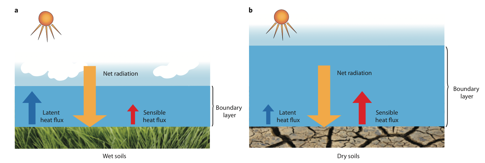
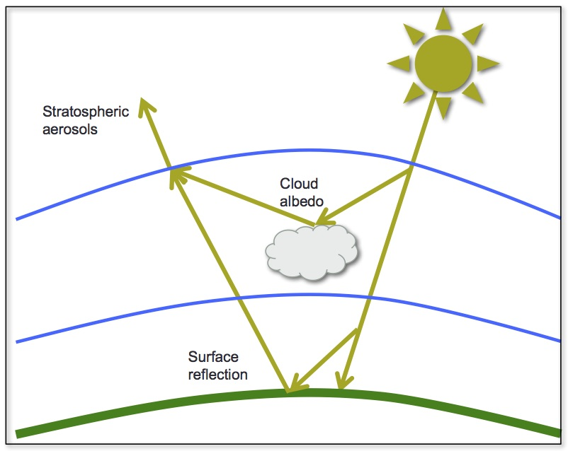
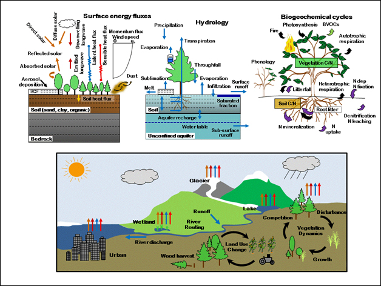
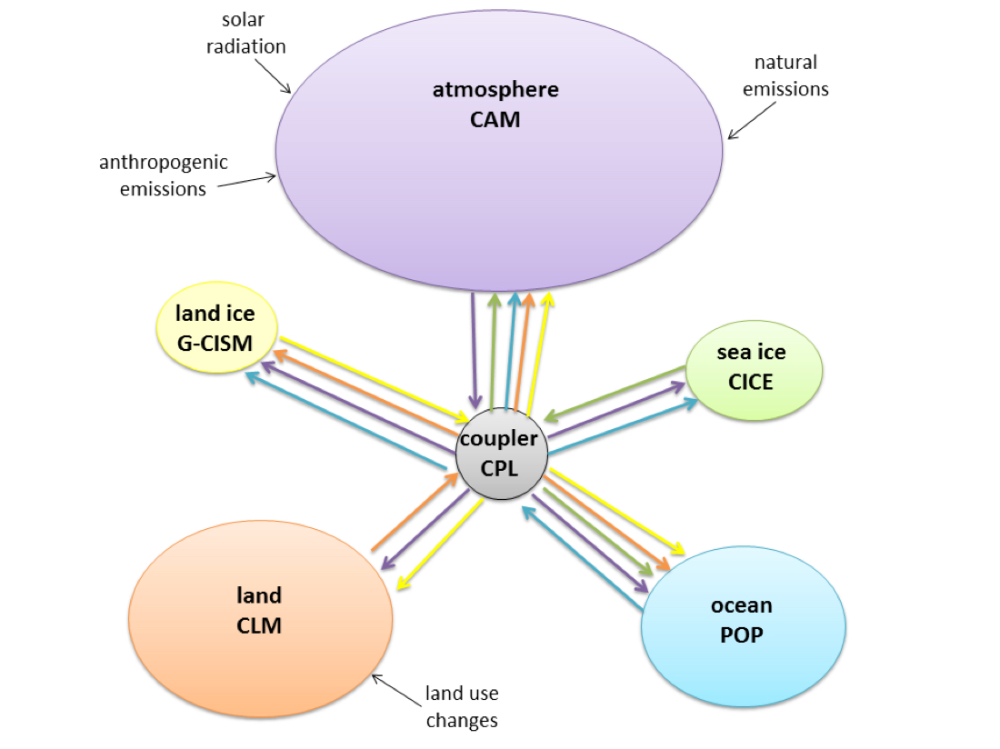

|
Land-Atmosphere Interactions As a climate scientist I am interested in many aspects of the Earth system and how they evolve over time. I am most fascinated by interactions between the land surface and the atmosphere, and understanding how terrestrial processes are simulated in Earth system models. My previous work has investigated changes in the surface energy budget, terrestrial hydrologic cycle, and vegetation. Recently I explored the connection between soil moisture and temperature variability, including extreme events such as heat waves and drought (Dagon and Schrag, 2017). |
 How soil moisture influences surface climate. [Image: Alexander (2011)] |
|  A variety of solar geoengineering methods. [Image: K. Dagon] |
Solar Geoengineering Solar geoengineering, or climate engineering, refers to a set of proposed methods to mitigate climate changes from greenhouse warming by manipulating the incoming solar radiation. To fully understand the consequences of solar geoengineering, research is needed to examine the impacts it will have on the climate system and understand how those impacts compare to the climate changes induced by a warming world. My research has explored the climate impacts of solar geoengineering in a modeling context, focusing in particular on land-atmosphere coupling, terrestrial water cycling, regional climate variability, and vegetation-climate interactions (e.g., Dagon and Schrag, 2016; Dagon and Schrag, 2019). |
|
Land Model Parameter Uncertainty Land surface models are essential tools for capturing biosphere-atmosphere processes in the climate system. In recent years land model complexity has increased significantly through the addition of new physical processes and human influences on the land surface. With this complexity comes additional sources of uncertainty in climate projections. Using the latest version of the Community Land Model (CLM5), I am exploring the role of parameter choices in overall land model sensitivity. Using a machine learning approach, I am working to calibrate CLM parameter values for sensitive quantities and apply the results to simulations of future climate. More broadly, I aim to better understand and communicate what is driving uncertainty in model projections of climate change. |
 CLM components. [Image: NCAR] |
|  CESM components. [Image: Alexander and Easterbrook (2011)] |
Climate Modeling My primary research tool is climate modeling. In particular I use the Community Earth System Model (CESM) to design and run experiments that test the climate response to various forcings. I focus on terrestrial systems, and have utilized many different configurations of CESM to investigate changes in land-atmosphere coupling, hydrology, and vegetation dynamics resulting from climate change. |